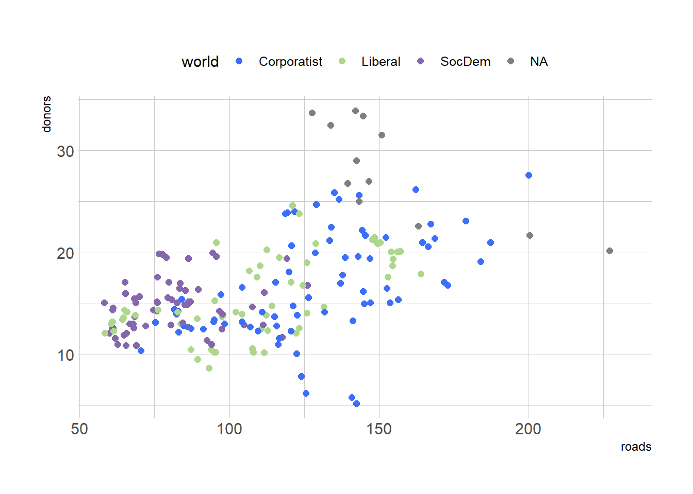
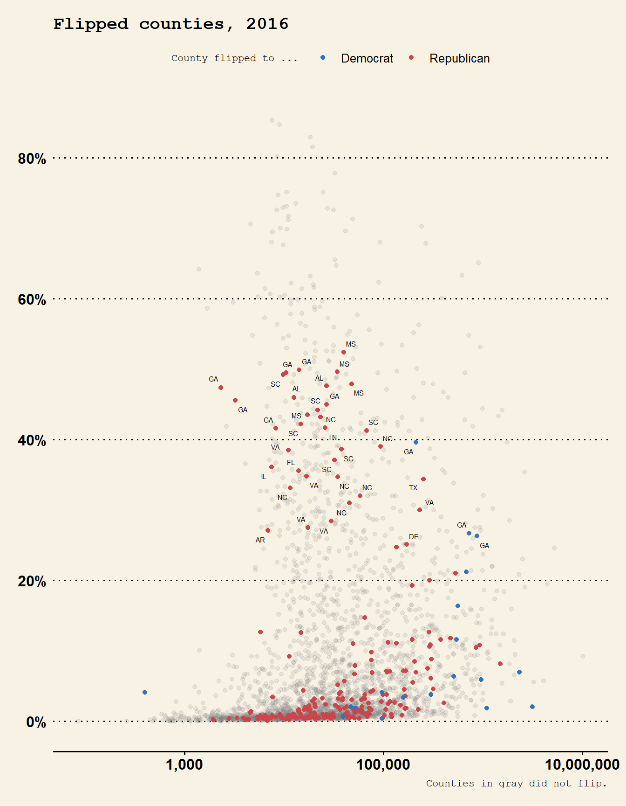
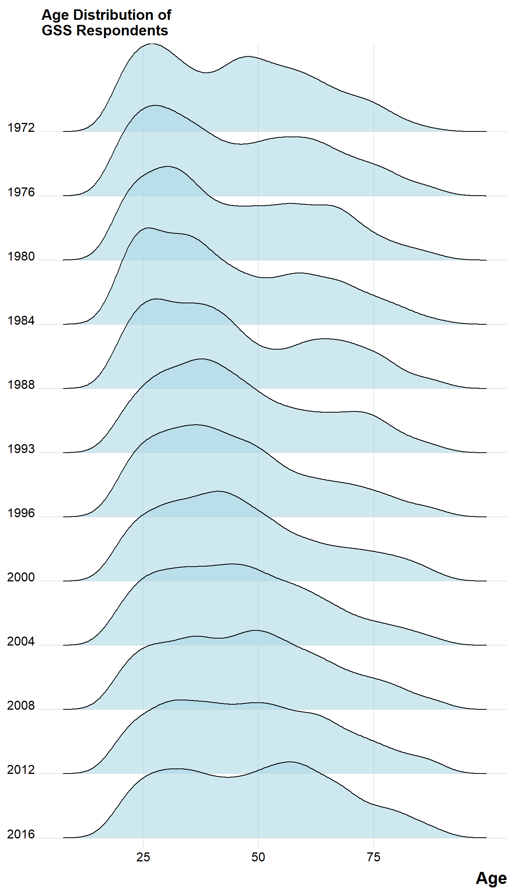

Should choose color palette based on type of data plotting
ex) Unordered vars need distinct colors, ordered vars need graded color scheme which changes as values change
Choose palettes for mappings thru scale_ functions added to plot for color or fill
Colors with RColorBrewer
# RColorBrewer provides a wide variety of named palettes# Access using scale_color_brewer() or scale_fill_brewer() with pallete = paramlibrary(RColorBrewer)library(tidyverse)
── Attaching core tidyverse packages ──────────────────────── tidyverse 2.0.0 ──
✔ dplyr 1.1.4 ✔ readr 2.1.5
✔ forcats 1.0.0 ✔ stringr 1.5.1
✔ ggplot2 3.5.1 ✔ tibble 3.2.1
✔ lubridate 1.9.4 ✔ tidyr 1.3.1
✔ purrr 1.0.2
── Conflicts ────────────────────────────────────────── tidyverse_conflicts() ──
✖ dplyr::filter() masks stats::filter()
✖ dplyr::lag() masks stats::lag()
ℹ Use the conflicted package (<http://conflicted.r-lib.org/>) to force all conflicts to become errors
library(hrbrthemes)library(ggthemes)
Example graphs using scale_color_brewer(palette = …)
Warning: Removed 34 rows containing missing values or values outside the scale range
(`geom_point()`).
Warning in grid.Call(C_stringMetric, as.graphicsAnnot(x$label)): font family
not found in Windows font database
Warning in grid.Call(C_stringMetric, as.graphicsAnnot(x$label)): font family
not found in Windows font database
Warning in grid.Call(C_stringMetric, as.graphicsAnnot(x$label)): font family
not found in Windows font database
Warning in grid.Call(C_textBounds, as.graphicsAnnot(x$label), x$x, x$y, : font
family not found in Windows font database
Warning in grid.Call(C_textBounds, as.graphicsAnnot(x$label), x$x, x$y, : font
family not found in Windows font database
Warning in grid.Call.graphics(C_text, as.graphicsAnnot(x$label), x$x, x$y, :
font family not found in Windows font database
Warning in grid.Call.graphics(C_text, as.graphicsAnnot(x$label), x$x, x$y, :
font family not found in Windows font database
Warning in grid.Call.graphics(C_text, as.graphicsAnnot(x$label), x$x, x$y, :
font family not found in Windows font database
Warning in grid.Call.graphics(C_text, as.graphicsAnnot(x$label), x$x, x$y, :
font family not found in Windows font database
Warning in grid.Call.graphics(C_text, as.graphicsAnnot(x$label), x$x, x$y, :
font family not found in Windows font database

Colorblindness
Below action shows the palettes in RColorBrewer
Along with a bool column showing if the palette is colorblind friendly or not
brewer.pal.info
maxcolors category colorblind
BrBG 11 div TRUE
PiYG 11 div TRUE
PRGn 11 div TRUE
PuOr 11 div TRUE
RdBu 11 div TRUE
RdGy 11 div FALSE
RdYlBu 11 div TRUE
RdYlGn 11 div FALSE
Spectral 11 div FALSE
Accent 8 qual FALSE
Dark2 8 qual TRUE
Paired 12 qual TRUE
Pastel1 9 qual FALSE
Pastel2 8 qual FALSE
Set1 9 qual FALSE
Set2 8 qual TRUE
Set3 12 qual FALSE
Blues 9 seq TRUE
BuGn 9 seq TRUE
BuPu 9 seq TRUE
GnBu 9 seq TRUE
Greens 9 seq TRUE
Greys 9 seq TRUE
Oranges 9 seq TRUE
OrRd 9 seq TRUE
PuBu 9 seq TRUE
PuBuGn 9 seq TRUE
PuRd 9 seq TRUE
Purples 9 seq TRUE
RdPu 9 seq TRUE
Reds 9 seq TRUE
YlGn 9 seq TRUE
YlGnBu 9 seq TRUE
YlOrBr 9 seq TRUE
YlOrRd 9 seq TRUE
Layering color and text together
Sometimes want to use color to highlight some aspect of data
county_data <- socviz::county_data
# DEM Blue and REP Redparty_colors <-c("#2E74C0", "#CB454A") p0 <-ggplot(data =filter(county_data, flipped =="No"),mapping =aes(x = pop, y = black/100) )p1 <- p0 +geom_point(alpha =0.15, color ="gray50") p1
–> Looks very skewed with the normal scale, so use a log10 scale instead
p0 <-ggplot(data =filter(county_data, flipped =="No"),mapping =aes(x = pop, y = black/100) )p1 <- p0 +geom_point(alpha =0.15, color ="gray50")+scale_x_log10(labels=scales::comma)p1
–> Now the data is more normally distributed, looks better as a viz, the last one was flipped == ‘No’, next will be flipped == ‘Yes’
–> viz will now be cleaned up and refined label-wise, and y-axis –> % labels
p3 <- p2 +scale_y_continuous(labels=scales::percent) +labs(color ="County flipped to ... ",x ="County Population (log scale)",y ="Percent Black Population",title ="Flipped counties, 2016",caption ="Counties in gray did not flip.")p3
–> Next viz now labels state on points that were flipped and have % AA > 25
p4 +theme_wsj() +theme(plot.title =element_text(size =rel(0.6)), # rel() mean relative size, here sets title 60% of original sizelegend.title =element_text(size =rel(0.35)),plot.caption =element_text(size =rel(0.35)),legend.position ="top")

p4 +theme(legend.position ="top",plot.title =element_text(size =rel(2),lineheight = .5,family ="Times", # fonts not found, but this is how to set font typeface ="bold.italic", # how to set bolt/italic or bothcolor ="orange"),axis.text.x =element_text(size =rel(1.1),family ="Courier",face ="bold",color ="purple") )
Warning in grid.Call(C_stringMetric, as.graphicsAnnot(x$label)): font family
not found in Windows font database
Warning in grid.Call(C_textBounds, as.graphicsAnnot(x$label), x$x, x$y, : font
family not found in Windows font database
Warning in grid.Call(C_stringMetric, as.graphicsAnnot(x$label)): font family
not found in Windows font database
Warning in grid.Call(C_textBounds, as.graphicsAnnot(x$label), x$x, x$y, : font
family not found in Windows font database
Warning in grid.Call.graphics(C_text, as.graphicsAnnot(x$label), x$x, x$y, :
font family not found in Windows font database
Warning in grid.Call.graphics(C_text, as.graphicsAnnot(x$label), x$x, x$y, :
font family not found in Windows font database
–> theme() allows us to have fine control over appearance of our visualizations
Warning in grid.Call(C_textBounds, as.graphicsAnnot(x$label), x$x, x$y, : font
family not found in Windows font database
Warning in grid.Call.graphics(C_text, as.graphicsAnnot(x$label), x$x, x$y, :
font family not found in Windows font database
–> element_blank() removes an element, as seen above with the x-axis labels
Example with gss_lon data
Showing age distributiin of General Social Survey (GSS) respondents over the years
gss_lon <- socviz::gss_lon
Preparation of data
yrs <-c(seq(1972, 1988, 4), 1993, seq(1996, 2016, 4))mean_age <- gss_lon |>filter( !is.na(age), year %in% yrs) |>group_by(year) |>summarize(xbar =round(mean(age, na.rm =TRUE), 0) ) # Removing obs in age var with missing vals, only for the years in yrs above, calc mean age for each yearmean_age$y <-0.3yr_labs <-data.frame(x =85, y =0.8, year = yrs) # to position the age as a text label
p <-ggplot(data =filter(gss_lon, year %in% yrs),mapping =aes(x = age))p1 <- p +geom_density(fill ="black", color =FALSE,alpha =0.9, mapping =aes(y = ..scaled..))p1
Warning: The dot-dot notation (`..scaled..`) was deprecated in ggplot2 3.4.0.
ℹ Please use `after_stat(scaled)` instead.
Don't know how to automatically pick scale for object of type <labelled>.
Defaulting to continuous.
Warning: Removed 83 rows containing non-finite outside the scale range
(`stat_density()`).
p2 <- p1 +geom_vline(data =filter( mean_age, year %in% yrs),aes(xintercept = xbar), color ="white", linewidth =0.5) +geom_text(data =filter(mean_age, year %in% yrs),aes(x = xbar, y = y, label = xbar), nudge_x =7.5, color ="white", size =3.5, hjust =1) +geom_text(data =filter( yr_labs, year %in% yrs),aes(x = x, y = y, label = year)) p2
Don't know how to automatically pick scale for object of type <labelled>.
Defaulting to continuous.
Warning: Removed 83 rows containing non-finite outside the scale range
(`stat_density()`).
–> nudge_x arg pushes label slightly to right of it’s associated x-value
p3 <- p2 +facet_grid(year ~ ., switch ="y")p3
Don't know how to automatically pick scale for object of type <labelled>.
Defaulting to continuous.
Warning: Removed 83 rows containing non-finite outside the scale range
(`stat_density()`).
–> switch = arg in facet_grid() moves labels to the left
p2a <- p3 +theme(plot.title =element_text(size =16),axis.text.x=element_text(size =12),axis.title.y=element_blank(),axis.text.y=element_blank(),axis.ticks.y =element_blank(),strip.background =element_blank(),strip.text.y =element_blank(),panel.grid.major =element_blank(),panel.grid.minor =element_blank()) +labs(x ="Age", y =NULL,title ="Age Distribution of\nGSS Respondents")p2a
Don't know how to automatically pick scale for object of type <labelled>.
Defaulting to continuous.
Warning: Removed 83 rows containing non-finite outside the scale range
(`stat_density()`).
ggridges
# install.packages("ggridges")library(ggridges)
Allows distributions to overlap vertically
especially useful for repeated distributional measures that change in clear direction
p <-ggplot(data = gss_lon,mapping =aes(x = age, y =factor(year, levels =rev(unique(year)), ordered =TRUE)))
–> factor() convets var to a factor var with set levels - levels param allows to set categories of categorical var
p <-ggplot(data =filter(gss_lon, year %in% yrs),mapping =aes(x = age))p2b <- p +geom_density_ridges(alpha =0.6, fill ="lightblue", scale =1.5,mapping =aes(y =factor(year, levels =rev(unique(year)), ordered =TRUE))) +scale_x_continuous(breaks =c(25, 50, 75)) +scale_y_discrete(expand =c(0.01, 0)) +labs(x ="Age", y =NULL, title ="Age Distribution of\nGSS Respondents") +theme_ridges() +# make labels aligned properlytheme(title =element_text(size =16, face ="bold"))p2b
Picking joint bandwidth of 3.48
Warning: Removed 83 rows containing non-finite outside the scale range
(`stat_density_ridges()`).

–> expand arg in scale_y_discrete() asjusts scalling of y-axis slightly
Arrange plots with drigExtra::grid.arrange()
library(gridExtra)
Attaching package: 'gridExtra'
The following object is masked from 'package:dplyr':
combine
grid.arrange(p2a, p2b, nrow =1) # sub-figures
Don't know how to automatically pick scale for object of type <labelled>.
Defaulting to continuous.
Warning: Removed 83 rows containing non-finite outside the scale range
(`stat_density()`).
Picking joint bandwidth of 3.48
Warning: Removed 83 rows containing non-finite outside the scale range
(`stat_density_ridges()`).
–> essentially takes multiple figures and arranges them in a table
Advanced Bar Charts
Using df studebt to show distribution of debt pct and how it varies by type
studebt <- socviz::studebtp_xlab <-"Amount Owed, in thousands of Dollars"p_title <-"Outstanding Student Loans"p_subtitle <-"44 million borrowers owe a total of $1.3 trillion"p_caption <-"Source: FRB NY"f_labs <-c(`Borrowers`="Percent of\nall Borrowers",`Balances`="Percent of\nall Balances")
p <-ggplot(data = studebt,mapping =aes(x = pct/100, y = Debt,fill = type))p1 <- p +geom_col()p1